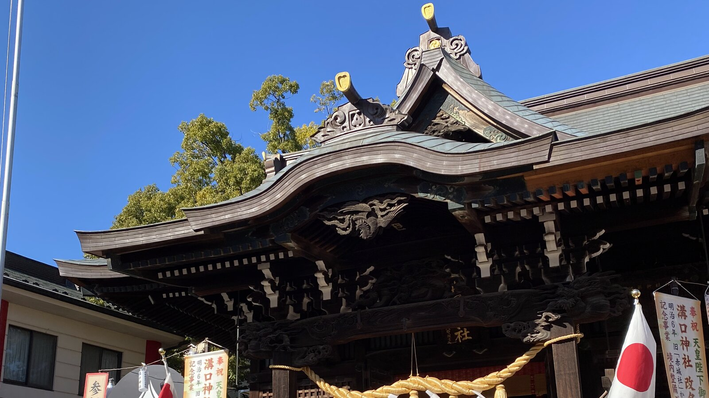
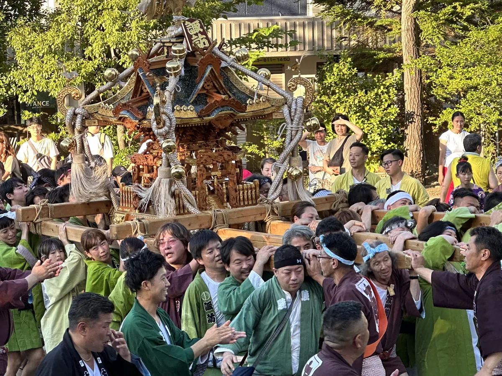
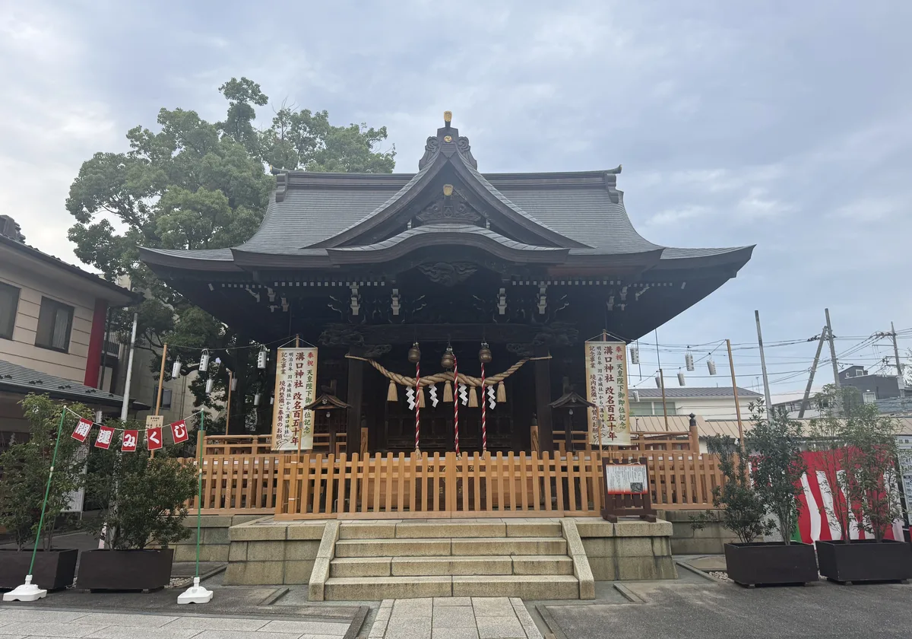
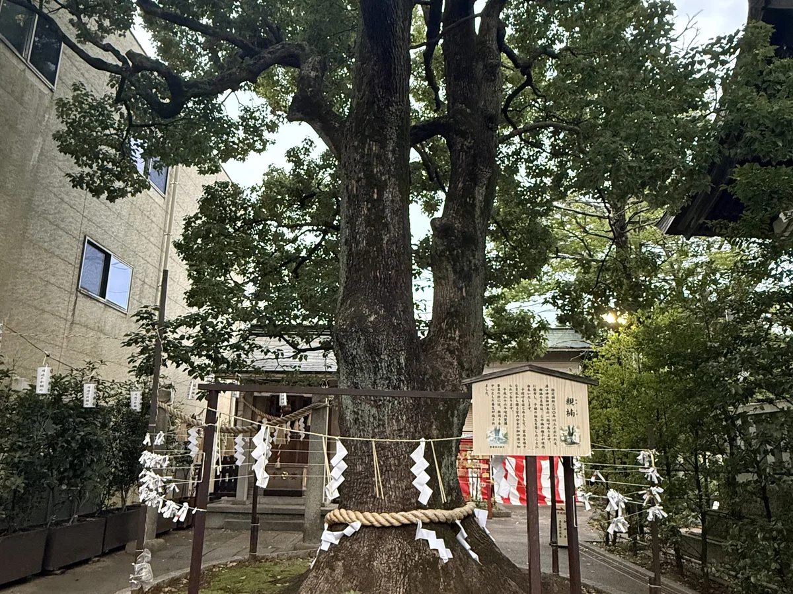
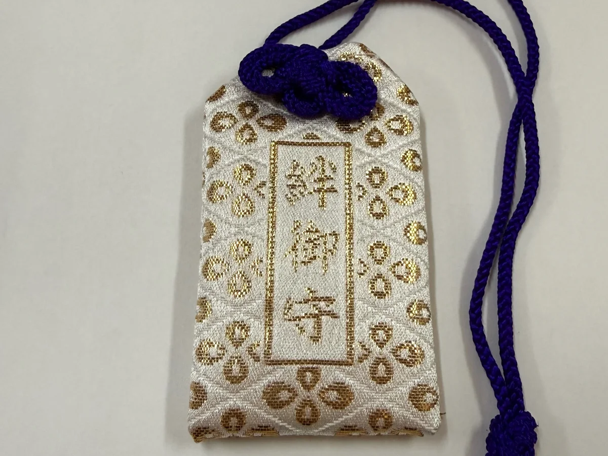
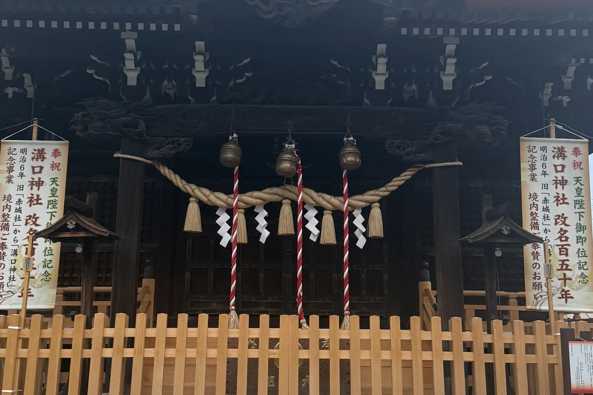

溝口神社
参拝のご案内
開門・閉門（通常）
午前6時〜午後5時30分
1月4日〜12月31日
お札・お守りの授与
午前9時〜午後5時
お焚き上げ（古札など）も同時間
正月三箇日・例大祭の開門時間
- 正月三箇日
-
1月1日：開門・閉門 午前0時〜午後9時
（お札・お守り対応 午前0時〜午後9時）
1月2日・3日：開門・閉門 午前6時〜午後8時
（お札・お守り対応 午前7時〜午後8時） - 例大祭
- 開門 午前6時〜閉門 午後9時
- 現金のみの対応となります。電子マネー・クレジットカードはご利用いただけません。
- 駐車スペースには限りがございます。周辺のコインパーキングまたは公共交通機関をご利用ください。
大切なお知らせ
現在、新しいお知らせはありません。
写真で伝える、いまの溝口神社
静かな祈りの日々と、地域とともにある祭礼。二つの表情が、この神社にはあります。



人生の節目のご祈願
はじめての方もご安心ください。代表的なご祈願をご紹介します。このほかの諸願もご相談いただけます。
-
誕生
安産祈願
初宮詣戌の日の安産祈願から、お子様の初めてのお参りへ
-
成長
七五三詣
三歳・五歳・七歳の節目に成長を感謝します
-
門出
合格祈願
交通安全受験や新生活、お車のお祓いなど新しい一歩に
-
厄年
厄除
厄年のお祓いを受け、一年の平安を祈ります
-
家族
家内安全
ご家族の健康と暮らしの平安を祈ります
-
仕事
商売繁盛
事業の発展と繁栄を祈ります
このほか、縁結び祈願、病気平癒祈願、八方除け祈願、身体健康祈願、開運厄除祈願なども承ります。 御祈祷のご案内はこちら
御祈祷のご案内
安産祈願、初宮詣、七五三詣、厄除など、人生の節目の御祈祷を毎日ご奉仕しております。
祈祷開始時間（開式時間）の一覧
- 9:00
- 9:30
- 10:00
- 10:30
- 11:00
- 11:30
- 12:00
- 12:30
- 13:00
- 13:30
- 14:00
- 14:30
- 15:00
- 15:30
- 16:00
※上記は開式時間です。15分前までに受付をお済ませください。
出張祭典（地鎮祭・上棟祭など）
地鎮祭、上棟祭、竣工祭、神棚祓い、住宅・会社・店舗の清祓い、会社工場安全祈願、事故現場清祓い、神式葬儀、式年祭・祖霊祭（神式法要）などを承ります（要予約）。
お申し込みは溝口神社社務所（044-822-3776）までご連絡ください。
令和8年の早見表
安産祈願の戌の日、ご自身の厄年・方位除けを、早見表でご確認いただけます。
年間行事
四季を通じて、様々なお祭りが斎行されます。開催日は年により変わるものがあります。最新の日程は年間行事ページ・お知らせをご確認ください。
夏
- 6月夏越の大祓6月30日
秋
- 9月例祭9月15日に近い日曜日
- 9〜12月七五三詣予約制
- 11月酉の市11月中の酉の日
冬
- 12月年越の大祓
- 1月元旦祭
- 2月節分祭式典・豆まき
授与品・御守り
溝口神社では、常時100種類以上の御守・御札を授与しております。授与所の対応時間は午前9時〜午後5時です。

絆御守
御祭神 天照大神の「調和」の御神徳にちなむ、溝口神社オリジナルの御守。家族・親子・夫婦・恋人・友人・職場など、様々な人間関係を良縁に導きます。
- 本革御守シリーズ（改革御守）
- 「改革」「革新」に通じる【革】の字には、物事の始まりに「たるんだものをしっかりと張り、新たに始動する」という意味が込められています。物事の始めのご守護に。
- 歯固め石
- 生後百日のお食い初めに、お子様の丈夫をお祈りします。お食い初めの後、石にお子様の名前を明記して神社にご奉納ください。
- ハローキティ身体御守
- 身体健康の御守として、お子様に人気のある御守です。
- 絵馬
- 溝口神社の由緒あるしゃもじ型絵馬をはじめ、縁結び・金運・合格の絵馬がございます。
溝口神社について

御祭神の天照皇大神（あまてらすすめおおかみ）は、皇室の御祖神であり、私たち日本人の総氏神でもあります。太陽神としての御神徳をもち、万物に活力を与え、八百万の神々の仲を取り持つことから、物事の調和をはかる御利益があるとされています。
江戸時代には神仏習合により、溝口村の鎮守・赤城大明神と称されていました。明治維新後、神仏分離の法により、新たに伊勢神宮より御分霊を奉迎して御祭神を改め、溝口神社と改称。溝口村の総鎮守として祀られ、明治6年（1873年）には幣帛共進村社に指定されました。
境内のご案内
御神木の長寿ケヤキや親子楠をはじめ、境内には見どころが数多くございます。
- 長寿ケヤキ
- 垂乳根の銀杏と歯固め塚
- 稲荷社
- 本殿
- 親楠（親子楠）
- 子楠（親子楠）
- 社務所
- 願掛けの夫婦銀杏
- 手水舎
- 神輿・曳太鼓
- 神橋
- 大鳥居
初めての方へ — 神社の質問箱
お参りやご祈祷の「これで合ってる？」に、神社ガイドでお答えします。
安産祈願には何を持っていけばよいですか？
特別なご準備がなくてもお受けいただけます。腹帯のお祓いをご希望の場合はご持参ください。安産祈願について詳しく見る
大安の日にお参りする方が多いのはなぜですか？
大安は何事にも良い日とされ、人生の節目に選ばれることがあります。ただし六曜は神社の祭祀と直接関係せず、どの日でもご参拝いただけます。六曜と日取りについて詳しく見る
御朱印はいただけますか？
御朱印については、事前に神社までお問い合わせください（044-822-3776）。御朱印について詳しく見る
溝口神社改名150年記念事業
改名150年を記念した社殿耐震・手水舎改修などの記念事業。工事の歩みと竣工後の姿を記録しています。
公式の発信
境内の様子や行事のご案内は、公式Instagramでも発信しております。
アクセス
神奈川県川崎市高津区溝口2-25-1
TEL：044-822-3776
FAX：044-822-8968
- 電車でお越しの方
-
東急田園都市線・大井町線「溝の口駅」正面口
JR南武線「武蔵溝ノ口駅」北口
各駅から徒歩約5分 - お車でお越しの方
-
境内に駐車場がございます（台数に限りがあります）。
※七五三・お正月・祭礼の時期は大変混み合います。なるべく公共交通機関をご利用ください。
神社周辺の写真店のご案内
写真のたなかや
〒213-0001 川崎市高津区溝口4-6-28
TEL：044-822-3466
営業時間：月〜金 9:30〜18:30／土日祝 9:00〜18:00
定休日：水曜日
ホームページ（外部サイト）
※営業時間・定休日は変更される場合があります。最新の情報は直接ご確認ください。
今日も、溝口の街とともに。